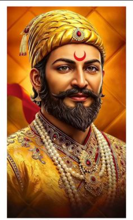

Courage
Known for determination and courage in difficult circumstances.
A Tribute to
A visionary leader, courageous warrior, and founder of Swarajya.
Explore His Journey
ABOUT HIM
Chhatrapati Shivaji Maharaj was a prominent Indian ruler who established the Maratha kingdom and laid the foundation for Swarajya.
He is remembered for his leadership, military strategy, administration, courage, and respect for people of different communities.
JOURNEY
Shivaji Maharaj was born at Shivneri Fort.
At a young age, he began working toward the establishment of Swarajya.
He was formally crowned Chhatrapati at Raigad Fort.
His legacy of leadership, administration, and Swarajya continued to inspire generations.
“
Freedom and self-rule were at the heart of Shivaji Maharaj's vision of Swarajya.
A tribute to his vision, leadership, and enduring legacy.
LEGACY
Known for determination and courage in difficult circumstances.
Built a strong system of administration and leadership.
Developed effective military and fortification strategies.
His administration is remembered for its emphasis on discipline and respect.